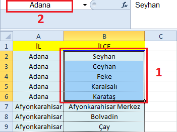
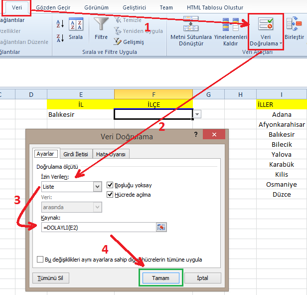

Veri Doğrulama İle Ait İlçeleri Getir - Microsoft Excel
Alan tanımlama, veri doğrulama ve formül yardımıyla E2 hücresinde verilen il bilgisine göre F2 hücresine o ile ait ilçeleri listeleteceğiz.
İl ve ilçelere ait alternatif bir veri setine aşağıdaki bağlantıdan ulaşabilirsiniz.
-
Alan İsimlendir
Her il için ait olduğu ilçeleri seçin ve sol üst köşeden isimlendirmesini yapın İllerin ismini verin seçtiğiniz alanlara ve bunu tüm iller için tekrarlayın.
 -
Veri Doğrulama
Veri Doğrulama penceresinde Liste tipine izin verecek şekilde ayarlayın ve Kaynak: kısmına da
=DOLAYLI(E2)yazın. ZatenE2hücresinde seçeceğimiz ili yazacağız.Formülün güzelliği şurada: Biz
E2hücresindeki bilgiyiDOLAYLIformülüne verdiğimiz zaman aslında bir önceki adımda yapılan alan tanımlama işlemindeki ismi formüle vermiş oluyoruz. Böylelikle formül, il ismiyle tanımlanmış ilçelerin olduğu alanı bize getirebiliyor. Mantık bu şekilde. -
Sonuç
E2 hücresine il ismini girdiğimizde F2 hücresinde tanımlı olan alandaki ilçeler listeleniyor.

{kind=link}
{kind=link}
Arşiv Sayfasına Git